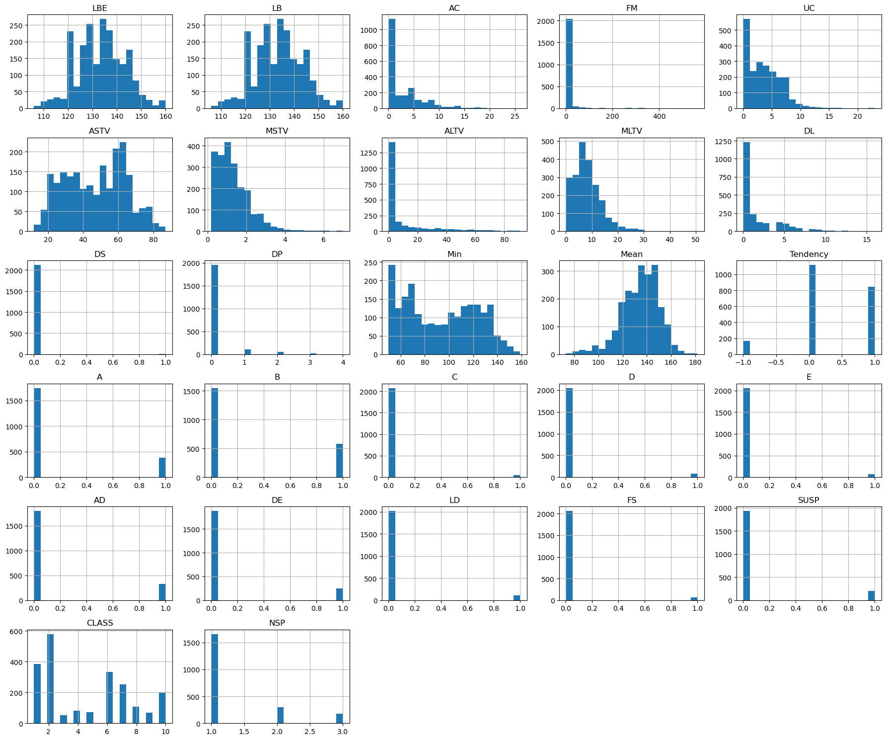
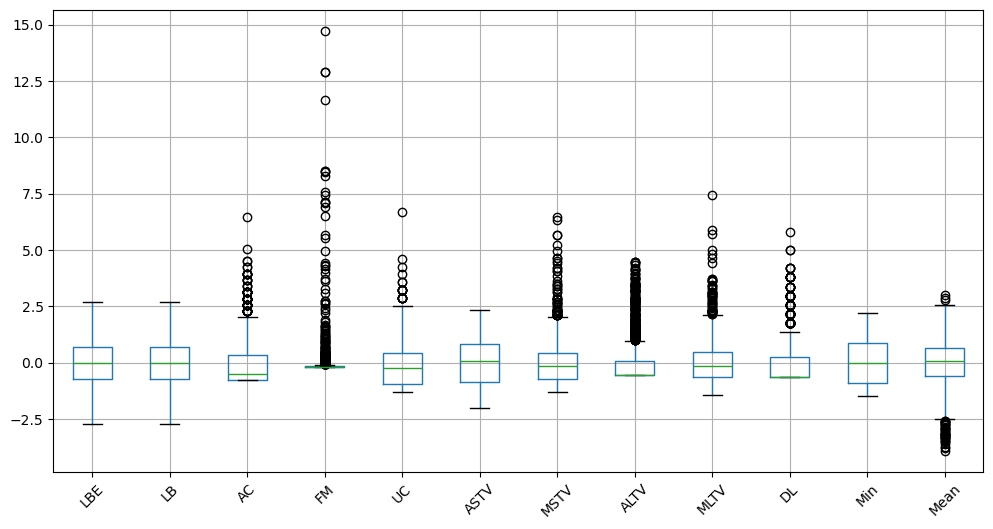
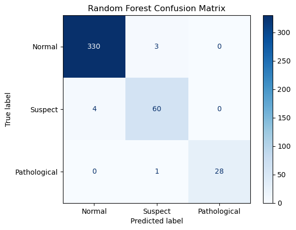
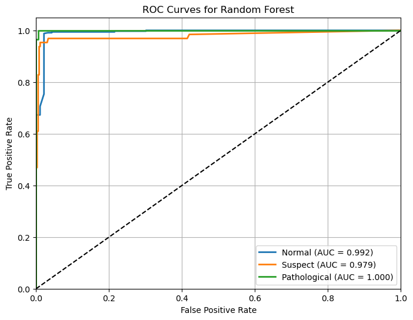

Fetal Health Prediction Model

Watch video presentation here.
Table of Contents
- Objective
- Executive Summary
- Data Set Overview
- Data Cleaning and Preprocessing
- Exploratory Data Analysis
- Feature Engineering and Selection
- Model Development
- Model Evaluation
- Conclusion
- References
Objective
The objective of this project was to develop and evaluate a machine learning model capable of accurately classifying fetal health as Normal, Suspect, or Pathological using cardiotocography (CTG) measurements. To achieve this objective, multiple supervised learning algorithms were trained and compared using a publicly available dataset from the UCI Machine Learning Repository.
Specific objectives included:
- Preparing the dataset through data cleaning, duplicate removal, feature selection, and handling of missing values.
- Identifying and removing redundant or highly correlated features to improve model efficiency and reduce multicollinearity.
- Training and comparing Logistic Regression, Decision Tree, Random Forest, Support Vector Machine (SVM), and Neural Network classifiers.
- Optimizing the best-performing model using hyperparameter tuning with five-fold cross-validation.
- Evaluating model performance using accuracy, precision, recall, F1-score, confusion matrices, and ROC curves while accounting for class imbalance through macro-averaged metrics.
- Selecting a final model that provides both high predictive performance and practical interpretability for potential clinical decision support.
The ultimate goal was to determine whether machine learning could reliably assist in the automated classification of fetal health, thereby supporting clinicians in identifying pregnancies that may require additional monitoring or intervention.
Executive Summary
Cardiotocography (CTG) is a non-invasive monitoring technique used during pregnancy to evaluate fetal well-being by analyzing fetal heart rate patterns and uterine contractions. Accurate interpretation of CTG recordings is essential for identifying fetuses at risk of complications; however, manual interpretation can be subjective and may vary among clinicians. Machine learning offers the potential to improve diagnostic consistency by automatically classifying fetal health based on physiological measurements.
This project developed and evaluated multiple supervised machine learning models to classify fetal health as Normal, Suspect, or Pathological using the Cardiotocography dataset from the UCI Machine Learning Repository. The dataset underwent extensive preprocessing, including removal of incomplete and duplicate records, elimination of redundant and highly correlated features, and evaluation of potential outliers. Five classification algorithms—Logistic Regression, Decision Tree, Random Forest, Support Vector Machine (SVM), and Neural Network—were trained and compared using a consistent train-test split and appropriate preprocessing techniques. Model performance was evaluated using accuracy, precision, recall, F1-score, receiver operating characteristic (ROC) curves, and macro-averaged metrics to account for class imbalance. Although the SVM achieved slightly higher overall performance during comparison, the Random Forest model was selected as the final model because it provided nearly identical predictive performance while offering greater interpretability and computational efficiency. Hyperparameter optimization using five-fold cross-validation resulted in a mean validation accuracy of 99.1%. The final Random Forest model achieved a test accuracy of 98.1%, a macro-average F1-score of 0.97, and excellent discrimination across all classes, with ROC AUC values of 0.992 for the Normal class, 0.979 for the Suspect class, and 1.000 for the Pathological class. The model demonstrated particularly strong performance in distinguishing normal and pathological fetal health, making it a promising decision-support tool for assisting clinicians in the interpretation of cardiotocography recordings.Dataset Overview
The data was aquired from UC Irving Machine Learning Repository and can be found here. It comprised 21 variables and 2,126 instances. The features chosen for the study were LBE, LB, AC, FM, UC, DL, DS, DP, ASTV, MSTV, ALTV, MLTV, min, mean, variance, tendency, A, B, C, D, E, AD, DE, LD, FS, SUSP, CLASS, and NSP. LB represents the baseline (or average) heart rate of the fetus. Our data had a min of 106 bpm and a max of 160 bpm. This range is average for a fetal heart rate (Source Hopkins medicine). The minimum possible heart rate of a fetus is 55 bpm (source ajog). NSP stands for normal, suspect, and pathological and this was the target variable for the study.
The min, max, and mean values in the Dataset Attributes table represent the minimum and maximum, and mean values in the dataset. Most of the minimum values are around zero except for LB (baseline heart beat) and Median (which represents the median of a FHR histogram). This makes sense because it would be impossible to have a heart rate of zero. However, the other features that represent the change in heart rate patterns, like # of light decelerations per minute or mean value of long term variability are able to have a value of 0.Dataset Attributes
| Attribute | Type | Description | Min Value | Max Value | Mean Value |
|---|---|---|---|---|---|
| LBE | Numeric (integer) | Baseline fetal heart rate | 106 | 160 | 133.304 |
| LB | Numeric (integer) | Baseline fetal heart rate | 106 | 160 | 133.304 |
| AC | Numeric (integer) | Number of accelerations | 0 | 26 | 2.722 |
| FM | Numeric (integer) | Number of fetal movements | 0 | 564 | 7.241 |
| UC | Numeric (integer) | Number of uterine contractions | 0 | 23 | 3.660 |
| ASTV | Numeric (integer) | Percentage of time with abnormal short-term variability | 12 | 87 | 46.990 |
| MSTV | Numeric (continuous) | Mean value of short-term variability | 0.2 | 7.0 | 1.333 |
| ALTV | Numeric (integer) | Percentage of time with abnormal long-term variability | 0 | 91 | 9.847 |
| MLTV | Numeric (continuous) | Mean value of long-term variability | 0 | 50.7 | 8.188 |
| DL | Numeric (integer) | Number of light decelerations | 0 | 16 | 1.570 |
| DS | Numeric (integer) | Number of severe decelerations | 0 | 1 | 0.003 |
| DP | Numeric (integer) | Number of prolonged decelerations | 0 | 4 | 0.126 |
| Min | Numeric (integer) | Histogram minimum | 50 | 159 | 93.579 |
| Mean | Numeric (integer) | Histogram mean | 73 | 182 | 134.611 |
| Variance | Numeric (integer) | Histogram variance | 0 | 269 | 18.808 |
| Tendency | Numeric (integer) | Histogram tendency (-1 = left, 0 = stable, 1 = right) | -1 | 1 | 0.320 |
| A | Binary | Calm sleep state | 0 | 1 | 0.181 |
| B | Binary | REM sleep state | 0 | 1 | 0.272 |
| C | Binary | Calm wakefulness state | 0 | 1 | 0.025 |
| D | Binary | Active wakefulness pattern | 0 | 1 | 0.038 |
| E | Binary | Agitated pattern | 0 | 1 | 0.034 |
| AD | Binary | Accelerative-decelerative pattern | 0 | 1 | 0.156 |
| DE | Binary | Decelerative episode | 0 | 1 | 0.119 |
| LD | Binary | Light deceleration pattern | 0 | 1 | 0.050 |
| FS | Binary | Fetal stress pattern | 0 | 1 | 0.032 |
| SUSP | Binary | Suspicious pattern indicator | 0 | 1 | 0.093 |
| CLASS | Categorical | Original CTG classification (1–10) | 1 | 10 | 4.510 |
| NSP | Categorical (Target) | Fetal health class (1 = Normal, 2 = Suspect, 3 = Pathological) | 1 | 3 | 1.304 |
Data Cleaning and Preprocessing
The "variance" feature was excluded from the dataset due to its unrealistic values, which rendered it uninterpretable. All values of DR were 0.0 so this feature was removed because it did not add any information to the dataset. Following feature importance analysis, the dataset was refined to 28 features. A correlation test was performed to eliminate features that were highly correlated.
Duplicate records were evaluated to prevent data leakage and ensure reliable model performance. Exact duplicate rows were removed prior to model training. Duplicate feature combinations with conflicting fetal health labels were reviewed and removed because identical input measurements with different classifications introduced ambiguity into the supervised learning process. Two incomplete records containing substantial missing data were identified during data cleaning. One record was almost entirely empty, while the other lacked the majority of predictor variables and the target label. Because these records could not be reliably imputed and represented less than 0.1% of the dataset, they were removed prior to model development.Exploratory Data Analysis
The figure below shows the distribution of each of the features. LBE, LB, ASTV, and Mean appear to have a normal distribution, while the other non categorical features appear to be skewed right. The NSP distribution shows that there are significantly more NSP = 1 (normal) instances than there are NSP = 2 (suspect) or NSP = 3 (pathological) instances. This is because most fetuses are healthy.
Histograms of Distributions

Feature Engineering and Selection
First, the columns “FileName”, “Date”, “SegFile”, “b”, and “e” were dropped because they are not physiological measurements. Then, features with a correlation less than 0.05 were dropped. These features were “Nzeros”, “Nmax”, and “Max.” Then, feature pairs with a correlation coefficient greater than 0.8 were evaluated, and one feature from each highly correlated pair was removed. The features removed were “Width”, “Mode”, and “Median.” The DR feature was removed due to the fact that all values of that feature were zero. The variance feature was removed because after careful examination, some of the values appeared to be unrealistic. Because the legitimacy of the variance values were brought into question, the feature was removed.
Model Development
The data was then split into training and testing datasets with 80% of the data for training and 20% for testing. The data was stratified based on the target feature to ensure that the proportions of classes 1, 2, and 3 were consistent across both the training and testing datasets. Outliers were reviewed with box plots, and then more closely reviewed by examining specific data entries. It was determined that all outliers were based on real data, so no outliers were removed.
Boxplots of Features

Five classification models were trained and evaluated using the same training and testing data. The models chosen fore comparison were Logistic Regression, Decision Tree, Random Forest, SVM, and Nerual Network. The Decision Tree and Random Forest were trained on the raw data while Logistic regression, SVM, and Neural Networks were all trained on standardized data. standardized data. Because the dataset contained class imbalance, Macro F1-score was used alongside accuracy to compare model performance.
Model Comparison
| Model | Accuracy | Macro F1 | Reason for considering the model |
|---|---|---|---|
| Logistic Regression | 97.9% | 0.967 | Simple, interpretable baseline |
| Decision Tree | 97.9% | 0.966 | Easy to visualize and explain |
| Random Forest | 98.1% | 0.970 | Strong ensemble method that often performs well |
| SVM | 98.6% | 0.976 | Effective for many classification problems |
| Neural Network | 98.1% | 0.970 | Can capture more complex relationships |
Although the SVM achieved marginally higher performance, Random Forest was selected as the final model because it provided comparable predictive performance while offering greater interpretability and computational efficiency. Hyperparameters were selected using 5-fold cross-validation on the training data. The optimized model achieved a mean cross-validation accuracy of 99.1%. When evaluated on the held-out test set, the model achieved 98.1% accuracy, indicating that it generalized well to unseen data.
Model Evaluation
The final model was evaluated on a held-out test set containing 426 observations. Performance was assessed using accuracy, precision, recall, and F1-score. The model achieved an overall test accuracy of 98.12%, indicating that it correctly classified the vast majority of fetal health records.
Random Forest Model Performance
Test Accuracy: 98.12%
| Class | Precision | Recall | F1-Score | Support |
|---|---|---|---|---|
| 1.0 (Normal) | 0.99 | 0.99 | 0.99 | 333 |
| 2.0 (Suspect) | 0.94 | 0.94 | 0.94 | 64 |
| 3.0 (Pathological) | 1.00 | 0.97 | 0.98 | 29 |
The model performed exceptionally well on the Normal class, with precision, recall, and F1-score all equal to 0.99. This indicates that normal fetal health cases were identified with very high reliability. Performance on the Suspect class was lower, with precision and recall both equal to 0.94. This suggests that the model occasionally confuses suspect cases with the other classes, which is expected because suspect cases often represent an intermediate condition. For the Pathological class, the model achieved a precision of 1.00 and a recall of 0.97, resulting in an F1-score of 0.98. The perfect precision indicates that all cases predicted as pathological were truly pathological, while the slightly lower recall indicates that a very small number of pathological cases were missed.
Confusion Matrix

The confusion matrix indicates that no pathological cases were misclassified as normal, and no normal cases were misclassified as pathological. This demonstrates that the model effectively distinguishes between the two most clinically distinct classes, avoiding the most critical classification errors. The receiver operating characteristic (ROC) analysis demonstrated excellent discriminative performance across all classes. The area under the curve (AUC) was 0.992 for the Normal class, 0.979 for the Suspect class, and 1.000 for the Pathological class, indicating outstanding class separation, with near-perfect discrimination for pathological cases.
ROC Curve

To account for class imbalance, macro-averaged metrics were also considered. The model obtained a macro-average precision of 0.98, macro-average recall of 0.96, and macro-average F1-score of 0.97, demonstrating strong and balanced performance across all three classes. Overall, the evaluation results indicate that the model is highly effective for fetal health classification, with particularly strong performance in identifying normal and pathological cases and only modestly reduced performance on suspect cases.
Conclusion
This study demonstrated that machine learning can accurately classify fetal health using cardiotocography (CTG) measurements. Following comprehensive data preprocessing, feature selection, and model comparison, the Random Forest classifier was selected as the final model due to its excellent predictive performance, computational efficiency, and interpretability.
The optimized Random Forest model achieved a mean cross-validation accuracy of 99.1% and a test accuracy of 98.1%, indicating strong generalization to previously unseen data. The model produced high precision, recall, and F1-scores across all three fetal health classes, with particularly strong performance in identifying both normal and pathological cases. Importantly, the confusion matrix showed that no normal cases were classified as pathological and no pathological cases were classified as normal, reducing the likelihood of the most clinically significant classification errors. ROC analysis further confirmed excellent discriminative ability, with AUC values approaching or reaching 1.0 for all classes.
Although the Suspect class proved to be the most challenging to classify, the model still achieved strong performance, reflecting the inherent overlap between intermediate fetal health conditions. The use of macro-averaged evaluation metrics ensured that performance was assessed fairly despite the class imbalance present in the dataset.
Overall, the results indicate that the Random Forest model is highly effective for automated fetal health classification and has the potential to serve as a clinical decision-support tool that complements, rather than replaces, expert interpretation of cardiotocography recordings. Future work could focus on validating the model using external clinical datasets, incorporating additional maternal and fetal health variables, and exploring explainable artificial intelligence techniques to further improve transparency and clinician trust. These enhancements would strengthen the model's applicability in real-world healthcare settings and support broader adoption of machine learning for prenatal care.
References
Campos, D. & Bernardes, J. (2000). Cardiotocography [Dataset]. UCI Machine Learning Repository. https://doi.org/10.24432/C51S4N.